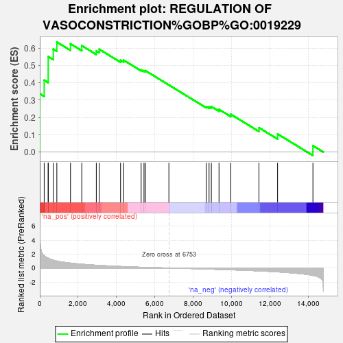
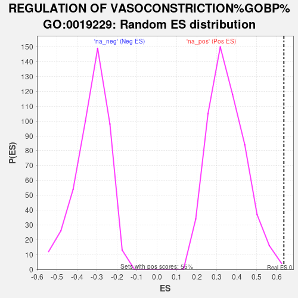

| | | Dataset | er_ranks |
| Phenotype | NoPhenotypeAvailable |
| Upregulated in class | na_pos |
| GeneSet | REGULATION OF VASOCONSTRICTION%GOBP%GO:0019229 |
| Enrichment Score (ES) | 0.6356775 |
| Normalized Enrichment Score (NES) | 1.8102413 |
| Nominal p-value | 0.003649635 |
| FDR q-value | 1.0 |
| FWER p-Value | 0.999 |
Table: GSEA Results Summary

Fig 1: Enrichment plot: REGULATION OF VASOCONSTRICTION%GOBP%GO:0019229
Profile of the Running ES Score & Positions of GeneSet Members on the Rank Ordered List
| SYMBOL | RANK IN GENE LIST | RANK METRIC SCORE | RUNNING ES | CORE ENRICHMENT | | 1 | KCNMB2 | 1 | 6.317 | 0.3368 | Yes |
| 2 | OXTR | 230 | 1.766 | 0.4155 | Yes |
| 3 | BDKRB2 | 439 | 1.411 | 0.4767 | Yes |
| 4 | F2R | 440 | 1.408 | 0.5518 | Yes |
| 5 | AVPR1A | 706 | 1.138 | 0.5945 | Yes |
| 6 | PER2 | 890 | 1.004 | 0.6357 | Yes |
| 7 | SVEP1 | 1602 | 0.707 | 0.6253 | No |
| 8 | ZDHHC21 | 2192 | 0.550 | 0.6147 | No |
| 9 | SMTNL1 | 2950 | 0.397 | 0.5847 | No |
| 10 | BMPR2 | 3105 | 0.370 | 0.5940 | No |
| 11 | TRPM4 | 4215 | 0.223 | 0.5308 | No |
| 12 | ITGA9 | 4378 | 0.204 | 0.5307 | No |
| 13 | AGTR1 | 5290 | 0.111 | 0.4750 | No |
| 14 | ITGA4 | 5439 | 0.100 | 0.4703 | No |
| 15 | ECE1 | 5512 | 0.093 | 0.4703 | No |
| 16 | KCNMB4 | 6738 | 0.001 | 0.3875 | No |
| 17 | ADM | 8689 | -0.144 | 0.2632 | No |
| 18 | DOCK5 | 8835 | -0.156 | 0.2617 | No |
| 19 | ATP2B1 | 8954 | -0.167 | 0.2626 | No |
| 20 | ACE | 9354 | -0.200 | 0.2462 | No |
| 21 | CAV1 | 9972 | -0.254 | 0.2180 | No |
| 22 | AGT | 11438 | -0.413 | 0.1409 | No |
| 23 | ITGB1 | 12411 | -0.555 | 0.1047 | No |
| 24 | DOCK4 | 14256 | -1.066 | 0.0367 | No |
Table: GSEA details [plain text format]

Fig 2: REGULATION OF VASOCONSTRICTION%GOBP%GO:0019229: Random ES distribution
Gene set null distribution of ES for REGULATION OF VASOCONSTRICTION%GOBP%GO:0019229